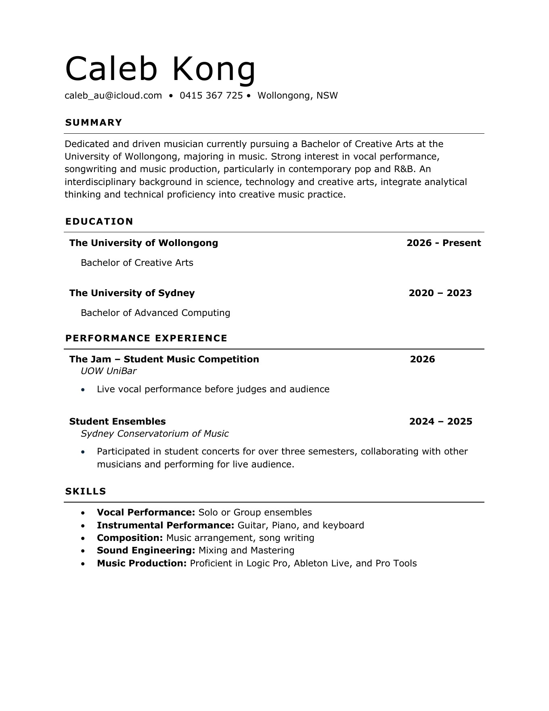
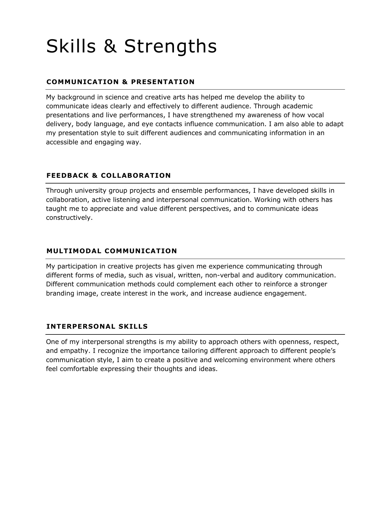

01 / Introduction
Caleb
Kong.
Singer · Songwriter · Music Producer
INTRODUCTORY FILM · 00:56
02 / CV
Creative CV

03 / Statement
Skills & Strengths

04 / Creative Work
Passenger
Written · Performed · Produced by Caleb Kong
Passenger is an original alternative-pop love song that I wrote, performed and produced. The demo was created using guitar, piano, bass and vocals. The inspiration for the song is from a simple moment in the car with my partner, when I realized that I had often found myself in the passenger seat, accompanying someone I cared about. This idea became the foundation of the song, telling the story of being a passenger to someone else not just physically, but also emotionally.
Listen here, or open Passenger on SoundCloud ↗